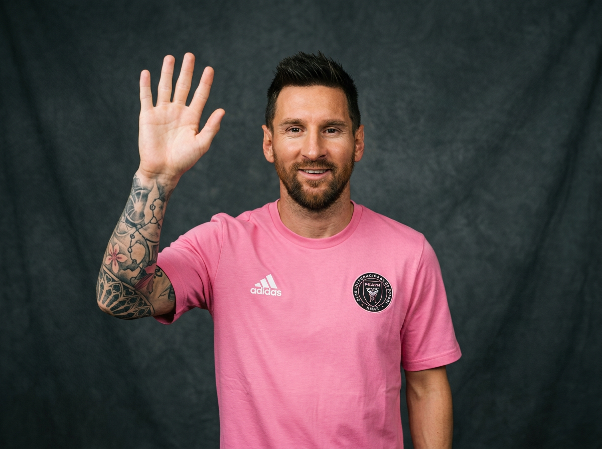

Аргентинский футболист, нападающий и капитан клуба MLS «Интер Майами». Чемпион мира, двукратный обладатель Кубка Америки, олимпийский чемпион. Восьмикратный обладатель «Золотого мяча» и шестикратный — «Золотой бутсы». Считается одним из лучших футболистов всех времён.
Основные факты
- Родился 24 июня 1987г.
- Гражданство Аргентина
- Рост 170 см
- Позиция нападающий
- Номер 10
Клубы
| Годы | Клуб | Голы |
|---|---|---|
| 2003-2021 | Барселона | 520 |
| 2021-2023 | Пари Сен-Жермен | 58 |
| 2023-н.в. | Интер Майами | 93 |
Главные достижения
- Серебро ЧМ 2014
- Золото ЧМ 2022
- Серебро ЧМ 2026
- Обладатель "Золотого мяча ФИФА" - 2010, 2011, 2012, 2015
- Обладатель «Золотой бутсы»: 2010, 2012, 2013, 2017, 2018, 2019